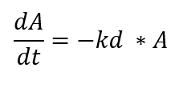
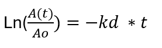
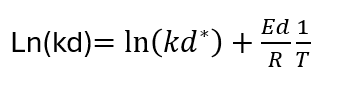
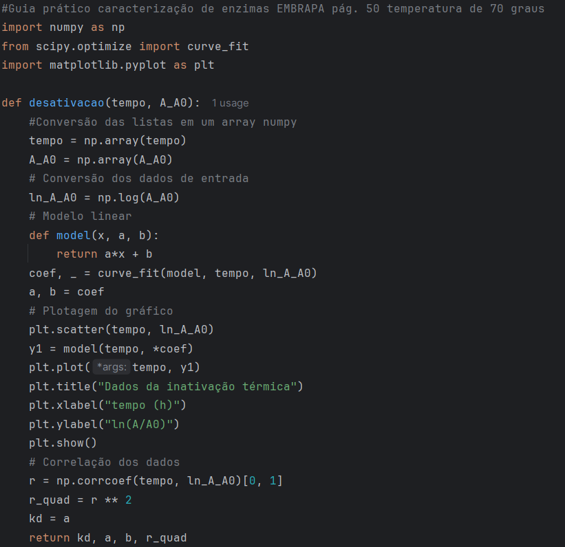
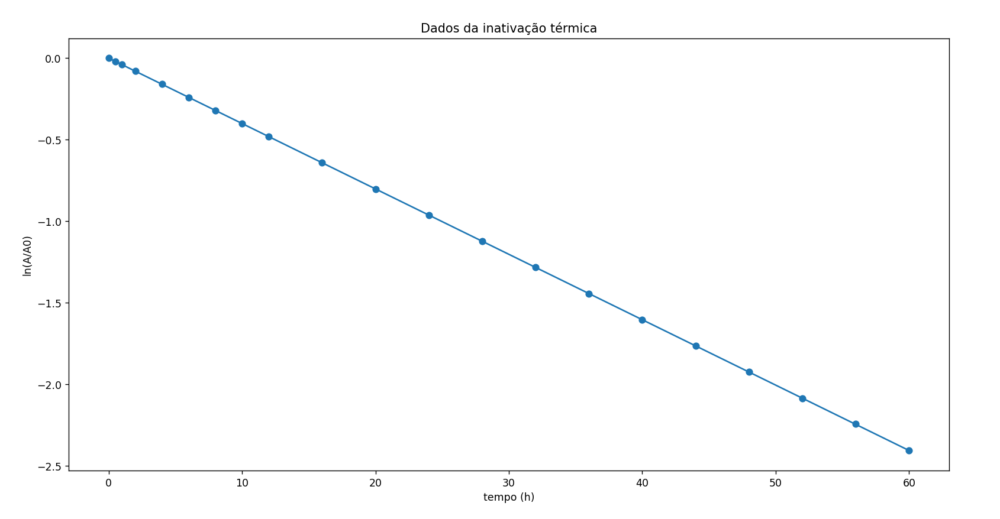
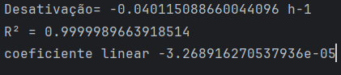
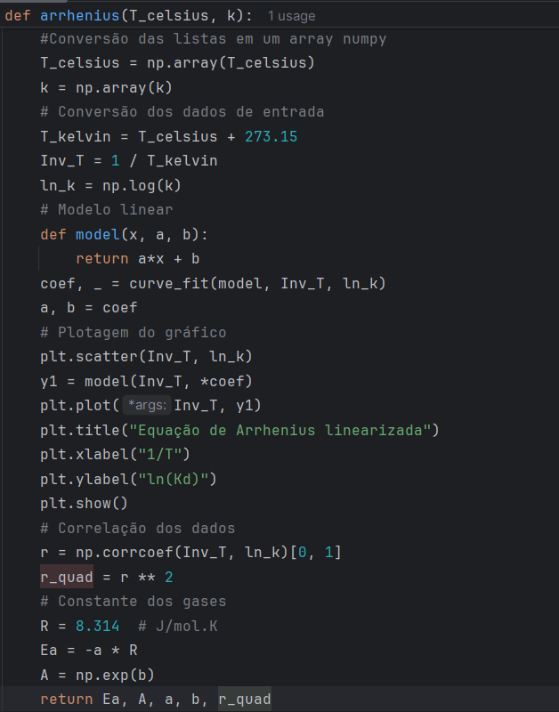
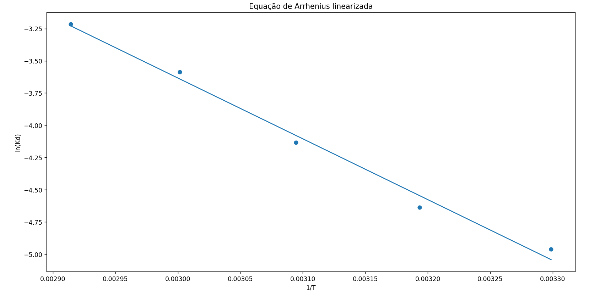
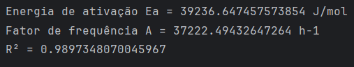

A estabilidade térmica de enzimas é um fator crucial para sua aplicação em processos industriais, especialmente em setores como alimentos, biotecnologia e indústria farmacêutica. Em condições de temperatura elevada, as enzimas tendem a perder sua atividade ao longo do tempo, em função de alterações estruturais em sua conformação tridimensional. Essas alterações envolvem mudanças nas estruturas secundária e terciária da proteína, levando à desnaturação e consequente redução da atividade catalítica.
A compreensão do comportamento da atividade enzimática em função do tempo e da temperatura é fundamental para a modelagem cinética de processos de desativação térmica. Nesse contexto, modelos cinéticos, como o de primeira ordem, são frequentemente utilizados para descrever a perda de atividade enzimática e estimar parâmetros relevantes, como a constante de desativação térmica.
O modelo mais simples para descrever a desativação de uma enzima é o modelo de primeira ordem, na qual a taxa de desativação é diretamente proporcional à concentração da enzima ativa, conforme apresentado na Figura 1. Essa relação, após integrada assume a forma da Figura 2, onde kd é chamada de constante de desativação ou desnaturação e A(t)/A0 é considerada a atividade relativa, onde A0 é a atividade no tempo inicial.


O valor de kd deverá ser determinado pelas equações acima em diversas temperaturas. De posse desses valores, pode-se obter a energia de ativação da enzima para o substrato estudado, através da equação de Arrhenius apresentada na Figura 3. Comparando Ed para duas enzimas, o maior valor de energia de ativação da inativação térmica se traduz em uma enzima menos sensível à temperatura (mais estável a elevadas temperaturas.)




Na Tabela 1 são apresentados os valores de constante de desativação para todas as temperaturas citadas acima. Com esses valores obtidos, foi feita a plotagem dos mesmos para calcular os parâmetros da equação de Arrhenius linearizada, apresentado na Figura 8. Com os valores dos parâmetros da equação de Arrhenius, foi calculada Energia da ativação e o fator de frequência, assim como o R2 do ajuste, demonstrando que foi muito boa a linearidade dos pontos.
| Temperatura (oC) | Constante de desativação (h-1) |
|---|---|
| 30 | 0,006997 |
| 40 | 0,009672 |
| 50 | 0,016003 |
| 60 | 0,027704 |
| 70 | 0,040115 |



Desenvolvimento : Química Programada